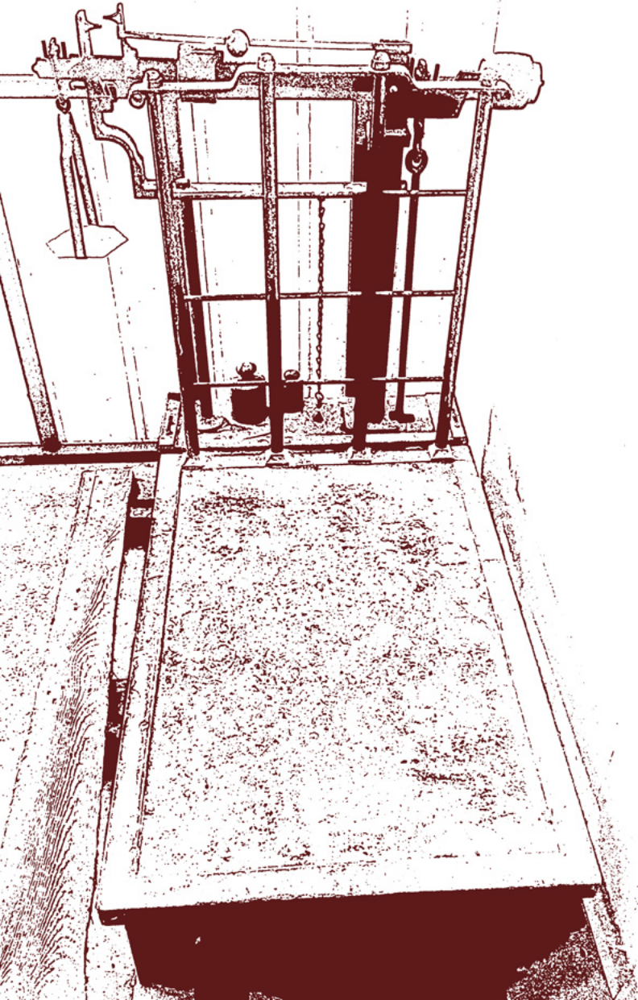
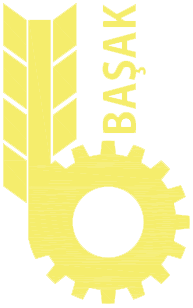

- TR
1790 doğumlu Mısırlızadelerden dedemiz Demirci Ali Usta'nın girişimciliğiyle DEMİRELLER ailesi demircilik işleri ve çeşitli çalik malzeme imalatıyla iştigal etmeye başlamıştır. Piyasa ihtiyaçları doğrultusunda kazma, tüfek gibi aletler üretilmiştir. 1920 yılın dan sonra Cumhuriyet döneminde tüfek imalatının yasaklanmasıyla tartı aletleri imalatı ana üretim konusu olmuştur.
Yeni pazar ihtiyaçları doğrultusunda Bilal DEMİREL Adapazarı'na gelir ve tartı aletlerinin üretimine bu ilde devam eder. 1963 yılında küçük kardeşi Osman DEMİREL ve 1967 yılında ağabeyi Hasan DEMİREL ile bir araya gelerek makine imalat işleri için ulusal ihalelere katılmaya başlanır. Su tankları, çöp yakma fırınları, yataklar, ve römorklar kardeşler tarafından ihale ile alınıp imalatı gerçekleştirilen ürünlerden bazılarıdır.

Şirket Kurucumuz Merhum Bilal Demirel
Eski yönetim kurulu başkanımız Osman DEMİREL çalışanlarıyla birlikte
Mahmut DEMİREL yönetime katılır. Kardan milleri ve traktör yedek parçaları ile ilgili artan piyasa talepleri neticesinde şirketin bu alanlarda faaliyet göstermesi gerekliliği görülmüş, bu doğrultuda yatırımlar yapılarak üretime geçilmiştir.
Demireller Makine San. ve Tic. A.Ş. adı altında şirket kurulur.
Nüfus artışıyla orantılı olarak taşıma sektöründe talepler artmış dolayısıyla demiryollarında oluşan onarım ve bakım yetersizliği bu alanda şirketler için yatırım yapma olanağı doğurmuştur. Bu sebeple firmamız yeni tesisler inşaa ederek Vagon Bakım & Onarım bölümünü kurmaya karar vermiştir. Ulusal ihale lere katılım sağlanarak çeşitli tiplerde bakım onarım ve yolcu koltukları imalatları gerçekleştirilmiştir.


Türkiye'nin tekstil sektöründeki konumu nedeniyle ev tekstilinde de faaliyet gösterme kararı alınarak firma ismi Demireller Makine-Tekstil San. ve Tic. A.Ş. olarak değiştirilmiştir.
Şirketimiz üç ortağıyla birlikte özelleştirme sonucunda Başak Traktör İş ve Tarım Makineleri San. ve Tic. A.Ş'yi satın almıştır. 2012 yılında SANKO holding'e satılarak iştirakimiz sonlandırılmıştır.
Mafsal İstavrozları imalatının yanında müşterilerimizden gelen talepler doğrultusun da kardan milleri ve yedek parçalarının üretim ve bakım faaliyetlerinde de bulunma kararı alınmış. Demireller Kardan Milleri ve İş Mak. San. ve Tic. Ltd. Şti. adı altında şirket kurulu mu gerçekleştirilmiştir.